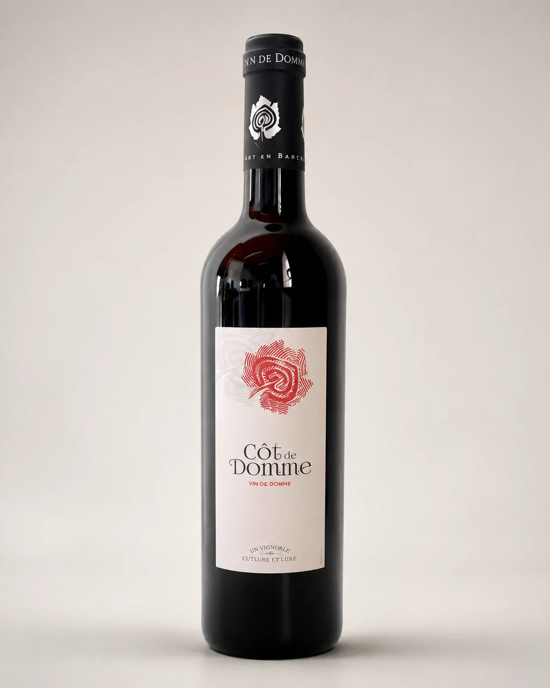
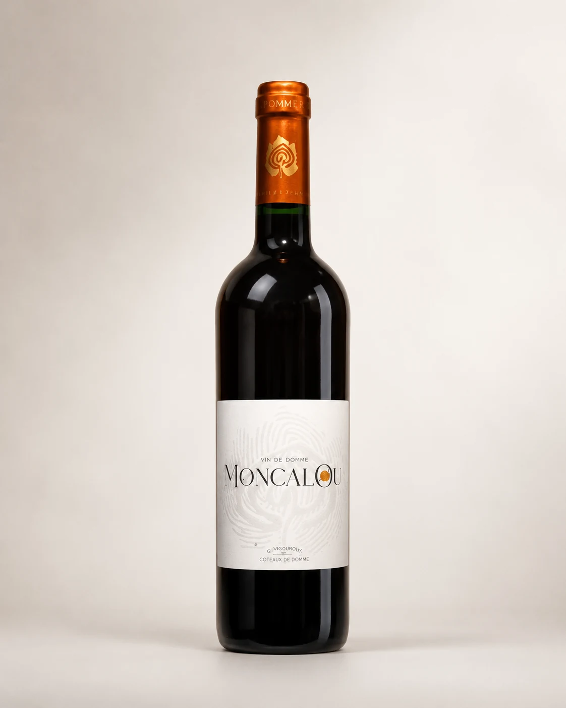
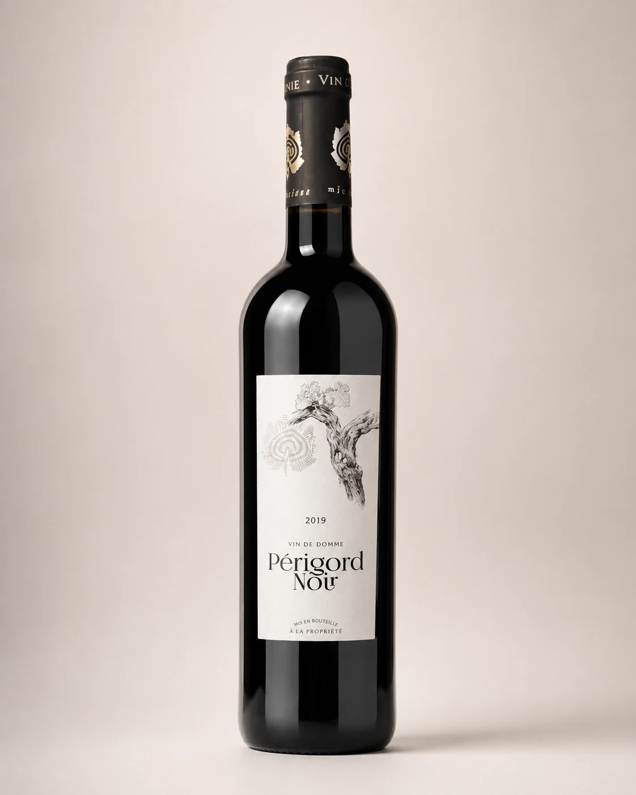
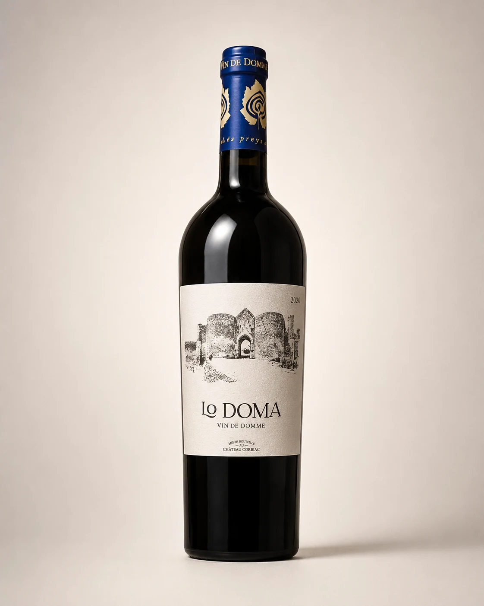
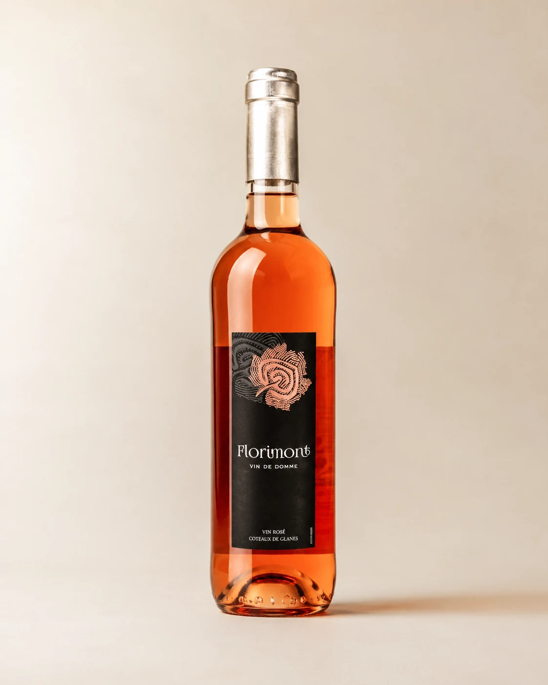
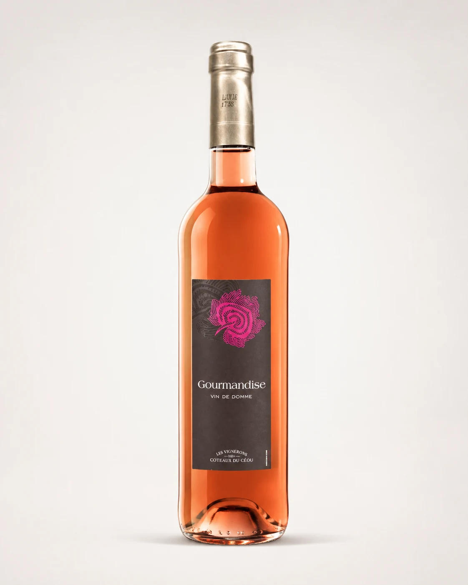
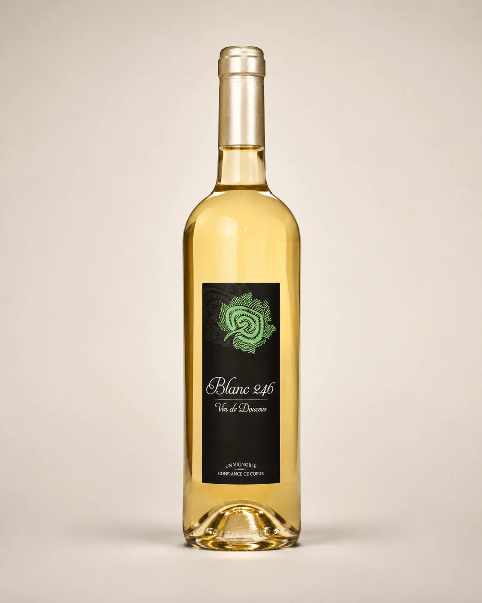

Malbec / Côt
Côt de Domme 2024
Fruits rouges et noirs. À servir entre 15 °C et 18 °C ; ouvrir 2 à 3 heures avant dégustation.
Comment commanderTarif particulier 20266,00 €75 cl
Découvrez les rouges, rosés et blancs des Vignerons des Coteaux du Céou, avec leurs assemblages, profils aromatiques et conseils de dégustation.

La dégustation permet de parcourir différents styles, du fruit frais aux cuvées élevées en fût ou en béton.

Fruits rouges et noirs. À servir entre 15 °C et 18 °C ; ouvrir 2 à 3 heures avant dégustation.
Comment commander
Tanins ronds et fins, arômes de fruits rouges mûrs et cassis. Vin de garde indiqué à 10 ans.
Comment commander
Arômes épicés et confiture de fruits rouges. Élevage en fût de chêne ; ouverture conseillée 4 à 6 heures avant dégustation.
Comment commander
Cuvée spéciale issue de parcelles sélectionnées, vinifiée et élevée en cuve béton. Cerise noire et cassis.
Comment commander
Rosé sec aux arômes de fruits rouges et d’agrumes, conseillé entre 10 °C et 12 °C.
Comment commander
Arômes de fraise, fruits exotiques et fruits rouges. À servir entre 10 °C et 12 °C.
Comment commander
Très aromatique, avec des notes de fleurs blanches et de fruits à chair blanche. À servir entre 12 °C et 14 °C.
Comment commanderCommandes par téléphone ou email, livraison en France métropolitaine selon les conditions en vigueur.
Tarifs indiqués d’après le tarif particuliers 2026, sous réserve de modification et de disponibilité des stocks.